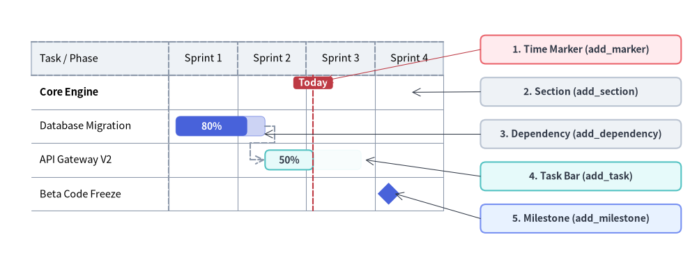
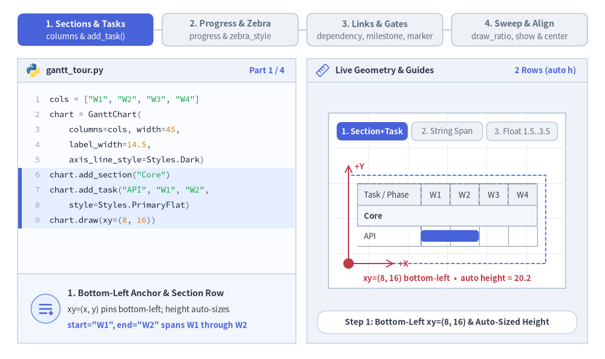
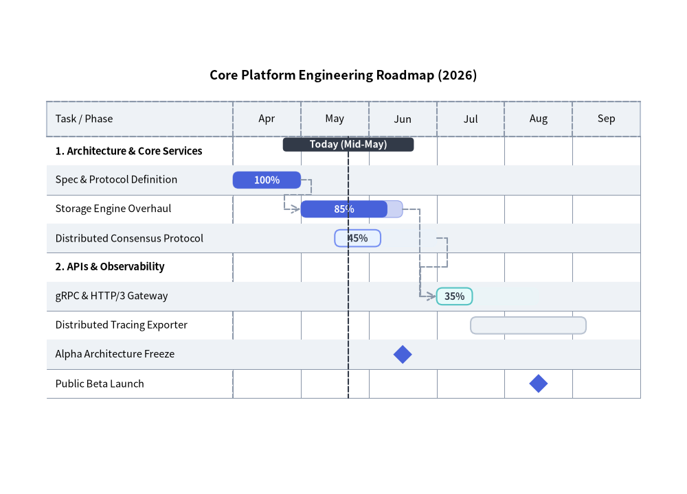
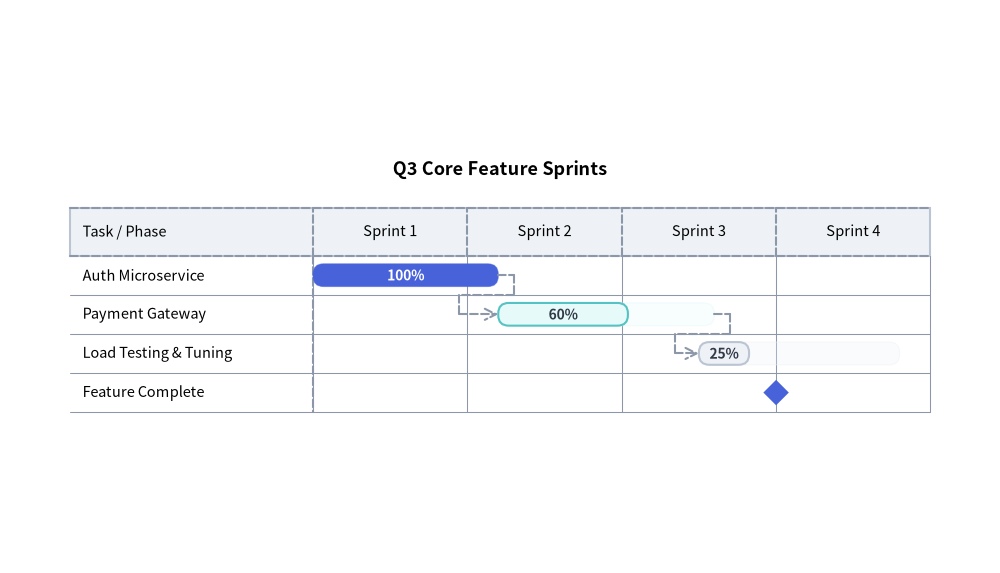

Gantt Chart（ガントチャート）：プロジェクトロードマップ・マイルストーン・依存関係
GanttChart（drawlib.charts.gantt）は、宣言的で高品質なベクター形式のプロジェクトロードマップ、スプリントスケジュール、マイルストーンタイムラインを提供します。横方向（X 軸）にタイムライン区間が並び、縦方向（Y 軸）にセクション区切りバナー、タスク行、マイルストーンが上から下へと順番に積み重なります。

Source Code
from drawlib.canvas import save, setup
from drawlib.charts.gantt import GanttChart
from drawlib.lines import line
from drawlib.shapes import rectangle
from drawlib.styles import Styles
setup(width=132, height=52)
chart = GanttChart(
columns=["Sprint 1", "Sprint 2", "Sprint 3", "Sprint 4"],
axis_line_style=Styles.MutedDashed,
axis_text_style=Styles.Black.patch(text_size=10.5),
grid_style=Styles.MutedThin,
header_style=Styles.Neutral,
progress_text_style=Styles.WhiteBold.patch(text_size=10.0),
width=82.0,
label_width=26.0,
header_height=6.4,
row_height=6.4,
bar_radius=0.9,
)
chart.add_section("Core Engine", text_style=Styles.BlackBold.patch(text_size=10.5))
t1 = chart.add_task("Database Migration", start=0.1, end=1.4, style=Styles.PrimaryFlat, progress=0.8)
t2 = chart.add_task(
"API Gateway V2",
start=1.4,
end=2.8,
style=Styles.SecondaryNeutral,
progress=0.5,
progress_text_style=Styles.DarkBold.patch(text_size=10.0),
)
chart.add_milestone("Beta Code Freeze", at=3.2, style=Styles.PrimaryFlat)
chart.add_dependency(t1, t2)
chart.add_marker(at=2.1, style=Styles.DangerDashed, label="Today", label_style=Styles.WhiteBold.patch(text_size=10.0))
chart.draw(xy=(4.0, 8.0))
# Compute exact row Y coordinates from chart.get_size()
_, chart_h = chart.get_size()
rows_top = 8.0 + chart_h - 2.0 - chart.header_height
row_cy = [rows_top - (i + 0.5) * chart.row_height for i in range(4)]
# Structural Callout Annotations on the Right
callouts = [
(42.5, "1. Time Marker (add_marker)", Styles.DangerNeutral),
(34.5, "2. Section (add_section)", Styles.Neutral),
(26.5, "3. Dependency (add_dependency)", Styles.Neutral),
(18.5, "4. Task Bar (add_task)", Styles.SecondaryNeutral),
(10.5, "5. Milestone (add_milestone)", Styles.PrimaryNeutral),
]
for cy, label_txt, box_style in callouts:
rectangle(
(110.0, cy),
width=38.0,
height=5.4,
style=box_style.patch(shape_r=1.0),
text=label_txt,
text_style=Styles.DarkBold.patch(text_size=10.0),
)
line((91.0, 42.5), (61.4, rows_top - 1.0), arrow_head="->", style=Styles.DangerThin)
line((91.0, 34.5), (78.0, row_cy[0]), arrow_head="->", style=Styles.DarkThin)
line((91.0, 26.5), (50.0, row_cy[1] - 1.5), arrow_head="->", style=Styles.DarkThin)
line((91.0, 18.5), (69.2, row_cy[2]), arrow_head="->", style=Styles.DarkThin)
line((91.0, 10.5), (74.8, row_cy[3]), arrow_head="->", style=Styles.DarkThin)
save()
1. 基本概念と基本的な使い方
GanttChart は順序付きの columns に沿って横向きのタイムラインロードマップを構築します。デフォルトで左下 (x, y) を基準にアンカーし（align="center" で中央揃えも可）、height=None の場合は登録された行数からコンテナの height を自動算出します。列名または浮動小数点オフセットを使って .add_section(...) バナー配下に .add_task(...) バーをグループ化できるほか、2 トーンの進捗率塗り分け（progress）や交互の行ストライプ（zebra_style）、.add_dependency(...) 矢印、.add_milestone(...) ひし形マーカー、.add_marker(...) 基準線、さらに draw_ratio と show による部分描画アニメーションをサポートしています。

Source Code
from __future__ import annotations
from drawlib.anim import Animation
from drawlib.canvas import save, setup
from drawlib.charts.gantt import GanttChart
from drawlib.icons import code as code_icons
from drawlib.icons import phosphor
from drawlib.lines import line
from drawlib.shapes import circle, rectangle
from drawlib.smartarts import SourceCode, SourceCodeStyles
from drawlib.styles import Styles
from drawlib.text import text
W, H = 138.0, 82.0
setup(width=W, height=H)
anim = Animation(fps=10.0, loop=0)
CODE_TEXT_SIZE = 10.0
PT_TO_CANVAS = W / 720.0
FONT_CANVAS = CODE_TEXT_SIZE * PT_TO_CANVAS
LINE_H = FONT_CANVAS * 1.8
PAD_Y = FONT_CANVAS * 1.2
CODE_STYLES = SourceCodeStyles.get("default", font_lang="en", text_size=CODE_TEXT_SIZE).patch(
box_style=Styles.Neutral.patch(shape_fill_color=(0, 0, 0, 0), shape_line_width=0),
)
PANE_HEADER = Styles.Neutral.patch(
shape_fill_color=(238, 243, 250),
shape_line_color=(203, 213, 225),
shape_line_width=1.2,
shape_r=0.0,
)
EDITOR_BODY = Styles.Neutral.patch(
shape_fill_color=(250, 252, 255),
shape_line_color=(203, 213, 225),
shape_line_width=1.2,
shape_r=0.0,
)
TAKEAWAY_BODY = Styles.Neutral.patch(
shape_fill_color=(242, 246, 253),
shape_line_color=(203, 213, 225),
shape_line_width=1.2,
shape_r=0.0,
)
STUDIO_BODY = Styles.Neutral.patch(
shape_fill_color=(239, 243, 249),
shape_line_color=(203, 213, 225),
shape_line_width=1.2,
shape_r=0.0,
)
PART_ITEMS = [
("1. Sections & Tasks", "columns & add_task()"),
("2. Progress & Zebra", "progress & zebra_style"),
("3. Links & Gates", "dependency, milestone, marker"),
("4. Sweep & Align", "draw_ratio, show & center"),
]
def draw_step_bar(active_part: int) -> None:
"""Draw top 4-part progress bar (active_part is 1..4)."""
pill_w = 31.0
pill_h = 7.4
gap = 2.0
start_x = 4.0 + pill_w / 2.0
cy = 75.2
for idx, (label, sublabel) in enumerate(PART_ITEMS, start=1):
cx = start_x + (idx - 1) * (pill_w + gap)
if idx > 1:
prev_cx = cx - (pill_w + gap)
line(
(prev_cx + pill_w / 2.0 + 0.2, cy),
(cx - pill_w / 2.0 - 0.2, cy),
style=Styles.PrimaryBold if idx <= active_part else Styles.MutedThin,
)
if idx == active_part:
st = Styles.PrimaryFlat.patch(shape_r=1.4)
tst = Styles.WhiteBold.patch(text_size=10.3)
sub_tst = Styles.White.patch(text_size=9.5)
elif idx < active_part:
st = Styles.PrimaryNeutral.patch(shape_r=1.4, shape_line_width=1.1)
tst = Styles.PrimaryBold.patch(text_size=10.3)
sub_tst = Styles.Primary.patch(text_size=9.5)
else:
st = Styles.Neutral.patch(shape_r=1.4, shape_line_width=1.1)
tst = Styles.MutedBold.patch(text_size=10.3)
sub_tst = Styles.Muted.patch(text_size=9.5)
rectangle((cx, cy), width=pill_w, height=pill_h, style=st)
text((cx, cy + 1.35), label, style=tst)
text((cx, cy - 1.55), sublabel, style=sub_tst)
def draw_left_pane(
active_part: int,
code_lines: list[str],
hl_range: tuple[int, int],
icon_fn: object,
summary_title: str,
summary_line1: str,
summary_line2: str,
) -> None:
"""Draw left Python code editor + bottom concept takeaway card."""
x0, w = 4.0, 63.5
cx = x0 + w / 2.0
top_y = 63.2
header_h = 5.4
editor_h = 43.8
takeaway_h = 15.8
rectangle((cx, top_y + header_h / 2.0), width=w, height=header_h, style=PANE_HEADER)
code_icons.python((x0 + 3.6, top_y + header_h / 2.0), width=3.4, style=Styles.Neutral)
text(
(x0 + 6.5, top_y + header_h / 2.0),
"gantt_tour.py",
style=Styles.DarkBold.patch(text_size=10.2, halign="left"),
)
text(
(x0 + w - 2.6, top_y + header_h / 2.0),
f"Part {active_part} / 4",
style=Styles.PrimaryBold.patch(text_size=9.8, halign="right"),
)
rectangle((cx, top_y - editor_h / 2.0), width=w, height=editor_h, style=EDITOR_BODY)
hl_start, hl_end = hl_range
hl_top = top_y - PAD_Y - hl_start * LINE_H
hl_bot = top_y - PAD_Y - (hl_end + 1) * LINE_H
hl_cy = (hl_top + hl_bot) / 2.0
hl_h = hl_top - hl_bot
rectangle(
(cx, hl_cy),
width=w - 0.6,
height=hl_h,
style=Styles.Neutral.patch(shape_fill_color=(229, 239, 255), shape_line_width=0),
)
rectangle(
(x0 + 0.55, hl_cy),
width=0.9,
height=hl_h,
style=Styles.PrimaryFlat.patch(shape_line_width=0),
)
SourceCode.draw(
xy=(x0, top_y),
width=w,
code="\n".join(code_lines),
styles=CODE_STYLES,
code_lang="python",
show_linenum=True,
align="top_left",
)
take_cy = 3.6 + takeaway_h / 2.0
rectangle((cx, take_cy), width=w, height=takeaway_h, style=TAKEAWAY_BODY)
circle(
(x0 + 6.4, take_cy),
radius=3.3,
style=Styles.PrimaryNeutral.patch(shape_line_width=1.2),
)
icon_fn((x0 + 6.4, take_cy), width=3.8, style=Styles.PrimaryBold) # type: ignore[operator]
text(
(x0 + 11.4, take_cy + 3.6),
summary_title,
style=Styles.DarkBold.patch(text_size=10.4, halign="left"),
)
text(
(x0 + 11.4, take_cy - 0.2),
summary_line1,
style=Styles.Dark.patch(text_size=9.7, halign="left"),
)
text(
(x0 + 11.4, take_cy - 3.8),
summary_line2,
style=Styles.PrimaryBold.patch(text_size=9.6, halign="left"),
)
def draw_geometry_studio(param_badge: str, footer_caption: str) -> tuple[float, float]:
"""Draw right geometry lab shell, inner coordinate sheet with subtle grid, and footer."""
x0, w = 70.0, 64.0
cx = x0 + w / 2.0
top_y = 63.2
header_h = 5.4
body_h = 59.6
rectangle((cx, top_y + header_h / 2.0), width=w, height=header_h, style=PANE_HEADER)
phosphor.ruler((x0 + 3.6, top_y + header_h / 2.0), width=3.4, style=Styles.Primary)
text(
(x0 + 6.5, top_y + header_h / 2.0),
"Live Geometry & Guides",
style=Styles.DarkBold.patch(text_size=10.2, halign="left"),
)
text(
(x0 + w - 2.6, top_y + header_h / 2.0),
param_badge,
style=Styles.PrimaryBold.patch(text_size=9.6, halign="right"),
)
rectangle((cx, 3.6 + body_h / 2.0), width=w, height=body_h, style=STUDIO_BODY)
sheet_cx, sheet_cy = cx, 36.2
sheet_w, sheet_h = 54.0, 40.0
sx0, sy0 = sheet_cx - sheet_w / 2.0, sheet_cy - sheet_h / 2.0
rectangle(
(sheet_cx, sheet_cy),
width=sheet_w,
height=sheet_h,
style=Styles.Neutral.patch(
shape_fill_color=(255, 255, 255),
shape_line_color=(180, 194, 214),
shape_line_width=1.2,
),
)
g_st = Styles.MutedThin.patch(line_color=(232, 238, 246), line_width=0.8)
for gx in range(1, 6):
vx = sx0 + gx * (sheet_w / 6.0)
line((vx, sy0), (vx, sy0 + sheet_h), style=g_st)
for gy in range(1, 5):
vy = sy0 + gy * (sheet_h / 5.0)
line((sx0, vy), (sx0 + sheet_w, vy), style=g_st)
rectangle(
(cx, 8.4),
width=59.2,
height=5.2,
style=Styles.Neutral.patch(
shape_fill_color=(255, 255, 255),
shape_line_color=(203, 213, 225),
shape_line_width=1.1,
shape_r=2.4,
),
text=footer_caption,
text_style=Styles.DarkBold.patch(text_size=9.8),
)
return sheet_cx, sheet_cy
def draw_sub_pills(scx: float, labels: list[str], active_idx: int) -> None:
"""Draw 3-step tracker pills near the top of the studio sheet."""
pw, ph, pgap = 16.2, 4.2, 0.9
p_start = scx - (3 * pw + 2 * pgap) / 2.0 + pw / 2.0
for idx, lbl in enumerate(labels):
px = p_start + idx * (pw + pgap)
if idx == active_idx:
pst = Styles.PrimaryFlat.patch(shape_r=1.2)
ptst = Styles.WhiteBold.patch(text_size=9.5)
elif idx < active_idx:
pst = Styles.PrimaryNeutral.patch(shape_r=1.2, shape_line_width=1.0)
ptst = Styles.PrimaryBold.patch(text_size=9.5)
else:
pst = Styles.Neutral.patch(shape_r=1.2, shape_line_width=1.0)
ptst = Styles.Muted.patch(text_size=9.5)
rectangle((px, 52.0), width=pw, height=ph, style=pst, text=lbl, text_style=ptst)
COLS = ["W1", "W2", "W3", "W4"]
GANTT_TEXT = Styles.Dark.patch(text_size=9.5)
SEC_TEXT = Styles.DarkBold.patch(text_size=9.5)
PROG_WHITE = Styles.WhiteBold.patch(text_size=9.5)
PROG_DARK = Styles.DarkBold.patch(text_size=9.5)
# =========================================================================
# Part 1: Sections & Tasks — Bottom-Left xy, Auto Height & Float Spans
# =========================================================================
TASK_STATES = [
(
1,
3.3,
[
'cols = ["W1", "W2", "W3", "W4"]',
"chart = GanttChart(",
" columns=cols, width=45,",
" label_width=14.5,",
" axis_line_style=Styles.Dark)",
'chart.add_section("Core")',
'chart.add_task("API", "W1", "W2",',
" style=Styles.PrimaryFlat)",
"chart.draw(xy=(8, 16))",
],
(5, 8),
"2 Rows (auto h)",
"Step 1: Bottom-Left xy=(8, 16) & Auto-Sized Height",
"1. Bottom-Left Anchor & Section Row",
"xy=(x, y) pins bottom-left; height auto-sizes",
'start="W1", end="W2" spans W1 through W2',
),
(
2,
3.3,
[
'cols = ["W1", "W2", "W3", "W4"]',
"chart = GanttChart(",
" columns=cols, width=45, ...)",
'chart.add_section("Core")',
'chart.add_task("API", "W1", "W2",',
" style=Styles.PrimaryFlat)",
'chart.add_task("UI", "W2", "W3",',
" style=Styles.Neutral)",
"# Auto height grows with rows!",
"chart.draw(xy=(8, 16))",
],
(6, 9),
"3 Rows (h=24.8)",
"Step 2: Appending Task Row Expands Auto Height Upward",
"2. Row Stacking & Column Spans",
"Each added row grows get_size() height upward",
"Column name strings snap to interval borders",
),
(
3,
3.4,
[
'cols = ["W1", "W2", "W3", "W4"]',
"chart = GanttChart(columns=cols,",
" width=45, ...)",
'chart.add_section("Core")',
'chart.add_task("API", "W1", "W2",',
" style=Styles.PrimaryFlat)",
"# Float span: mid-W2 to mid-W4",
"st_ui = Styles.SecondaryNeutral",
'chart.add_task("UI", 1.5, 3.5,',
" style=st_ui)",
"chart.draw(xy=(8, 16))",
],
(6, 9),
"Float 1.5..3.5",
"Step 3: Fractional Offsets (1.5..3.5) for Mid-Column Spans",
"3. Fractional Float Time Offsets",
"0.0 is left of W1; 1.5 is mid-W2; 3.5 is mid-W4",
"Mix column names and float offsets freely",
),
]
for p1_idx, (mode_p1, dur, code_1, hl_rng, badge_txt, foot_txt, s_t, s_1, s_2) in enumerate(TASK_STATES):
with anim.frame(duration=dur):
draw_step_bar(1)
draw_left_pane(1, code_1, hl_rng, phosphor.list_plus, s_t, s_1, s_2)
scx, _ = draw_geometry_studio(badge_txt, foot_txt)
draw_sub_pills(scx, ["1. Section+Task", "2. String Span", "3. Float 1.5..3.5"], p1_idx)
bx, by, cw, lw = 79.5, 21.8, 45.0, 14.5
chart = GanttChart(
columns=COLS,
axis_line_style=Styles.MutedDashed,
axis_text_style=GANTT_TEXT,
grid_style=Styles.MutedThin,
header_style=Styles.Neutral,
width=cw,
label_width=lw,
row_height=4.6,
header_height=5.0,
bar_radius=0.8,
)
chart.add_section("Core", style=Styles.Neutral.patch(shape_fill_color=(244, 247, 252)), text_style=SEC_TEXT)
chart.add_task("API", "W1", "W2", style=Styles.PrimaryFlat)
if mode_p1 == 2:
chart.add_task("UI", "W2", "W3", style=Styles.Neutral)
elif mode_p1 == 3:
chart.add_task("UI", 1.5, 3.5, style=Styles.SecondaryNeutral)
chart.draw(xy=(bx, by))
_, ch = chart.get_size()
if mode_p1 in (1, 2):
rectangle(
(bx + cw / 2.0, by + ch / 2.0),
width=cw,
height=ch,
style=Styles.PrimaryDashed.patch(shape_fill_color=(0, 0, 0, 0), shape_line_width=1.2),
)
line((bx, by), (bx, by + ch + 2.4), arrow_head="->", style=Styles.DangerBold.patch(line_width=1.4))
text((bx + 1.4, by + ch + 2.0), "+Y", style=Styles.DangerBold.patch(text_size=9.5, halign="left"))
line((bx, by), (bx + 10.5, by), arrow_head="->", style=Styles.DangerBold.patch(line_width=1.4))
text((bx + 11.4, by), "+X", style=Styles.DangerBold.patch(text_size=9.5, halign="left"))
circle((bx, by), radius=1.2, style=Styles.DangerFlat)
text(
(scx, 18.4),
f"xy=(8, 16) bottom-left • auto height = {ch:.1f}",
style=Styles.DangerBold.patch(text_size=9.5),
)
else:
x_tl = bx + 2.0 + lw
col_w = (cw - 4.0 - lw) / 4.0
for f_val in (1.5, 3.5):
fx = x_tl + f_val * col_w
line((fx, 23.6), (fx, 28.1), style=Styles.PrimaryDashed.patch(line_width=1.2))
text((fx, 22.1), f"{f_val}", style=Styles.PrimaryBold.patch(text_size=9.5))
text(
(scx, 18.4),
"Fractional offsets 1.5..3.5 land at column midpoints",
style=Styles.PrimaryBold.patch(text_size=9.5),
)
# =========================================================================
# Part 2: Progress & Zebra — Two-Tone Completion & Row Striping
# =========================================================================
STYLE_STATES = [
(
"prog_one",
3.3,
[
"chart = GanttChart(",
" columns=cols, width=45,",
" progress_text_style=(",
" Styles.WhiteBold), ...)",
'chart.add_section("Core")',
"chart.add_task(",
' "API", 0.0, 2.4,',
" style=Styles.PrimaryFlat,",
" progress=0.75)",
'chart.add_task("UI", 1.4, 3.8,',
" style=Styles.Neutral)",
],
(5, 8),
"progress = 0.75",
"progress=0.75: Solid 75% Completed Fill + 28%-Alpha Span",
"Two-Tone Completion Fill (progress)",
"Solid fill for completed % and tint for remaining",
'Renders "75%" label via progress_text_style',
),
(
"prog_both",
3.3,
[
"chart = GanttChart(",
" ..., progress_text_style=(",
" Styles.WhiteBold))",
'chart.add_section("Core")',
'chart.add_task("API", 0.0, 2.4,',
" style=Styles.PrimaryFlat,",
" progress=0.75)",
'chart.add_task("UI", 1.4, 3.8,',
" style=Styles.PrimaryNeutral,",
" progress=0.5,",
" progress_text_style=dark_b)",
],
(7, 10),
"Per-Task Style",
"progress_text_style: High-Contrast DarkBold on Light Bars",
"Per-Task Progress Label Contrast",
"Override progress_text_style on pale Neutral bars",
"WhiteBold on dark bars; DarkBold on pale bars",
),
(
"zebra",
3.4,
[
"chart = GanttChart(",
" columns=cols, width=45,",
" header_style=Styles.Neutral,",
" zebra_style=(",
" Styles.NeutralFlat),",
" grid_style=Styles.MutedThin,",
" ...)",
'chart.add_section("Core")',
'chart.add_task("API", ..., 0.75)',
'chart.add_task("UI", ..., 0.50)',
"chart.draw(xy=(8, 16))",
],
(2, 5),
"zebra_style",
"header_style & zebra_style: Banded Header + Row Striping",
"Header Band & Alternating Zebra Rows",
"header_style frames column titles at the top",
"zebra_style shades odd rows for easy scanning",
),
]
for p2_idx, (mode_p2, dur, code_2, hl_rng, badge_txt, foot_txt, s_t, s_1, s_2) in enumerate(STYLE_STATES):
with anim.frame(duration=dur):
draw_step_bar(2)
draw_left_pane(2, code_2, hl_rng, phosphor.chart_bar_horizontal, s_t, s_1, s_2)
scx, _ = draw_geometry_studio(badge_txt, foot_txt)
draw_sub_pills(scx, ["progress=0.75", "Per-Task Text", "Header & Zebra"], p2_idx)
bx, by, cw, lw = 79.5, 21.8, 45.0, 14.5
use_zebra = mode_p2 == "zebra"
z_st = Styles.Neutral.patch(shape_fill_color=(236, 242, 250), shape_line_width=0) if use_zebra else None
h_st = Styles.PrimaryNeutral if use_zebra else None
chart = GanttChart(
columns=COLS,
axis_line_style=Styles.MutedDashed,
axis_text_style=GANTT_TEXT,
grid_style=Styles.MutedThin,
header_style=h_st,
zebra_style=z_st,
progress_text_style=PROG_WHITE,
width=cw,
label_width=lw,
row_height=4.6,
header_height=5.0,
bar_radius=0.8,
)
chart.add_section("Core", style=Styles.Neutral.patch(shape_fill_color=(245, 247, 250)), text_style=SEC_TEXT)
chart.add_task("API", 0.0, 2.4, style=Styles.PrimaryFlat, progress=0.75)
if mode_p2 == "prog_one":
chart.add_task("UI", 1.4, 3.8, style=Styles.Neutral)
foot_note = "Solid 75% completed bar + translucent remaining span"
elif mode_p2 == "prog_both":
chart.add_task(
"UI",
1.4,
3.8,
style=Styles.PrimaryNeutral,
progress=0.5,
progress_text_style=PROG_DARK,
)
foot_note = "Per-task progress_text_style=DarkBold on pale bar"
else:
chart.add_task(
"UI",
1.4,
3.8,
style=Styles.SecondaryNeutral,
progress=0.5,
progress_text_style=PROG_DARK,
)
foot_note = "header_style + alternating row zebra_style active"
chart.draw(xy=(bx, by))
text((scx, 18.4), foot_note, style=Styles.PrimaryBold.patch(text_size=9.5))
# =========================================================================
# Part 3: Links & Gates — add_dependency(), add_milestone() & add_marker()
# =========================================================================
GATE_STATES = [
(
"dep",
3.3,
[
"chart = GanttChart(columns=cols,",
" width=45, ...)",
'chart.add_section("Core")',
't1 = chart.add_task("API",',
" 0.1, 1.2,",
" style=Styles.PrimaryFlat)",
't2 = chart.add_task("Web",',
" 2.2, 3.5,",
" style=Styles.Neutral)",
"chart.add_dependency(t1, t2)",
"chart.draw(xy=(8, 15))",
],
(9, 9),
"add_dependency",
"add_dependency(t1, t2): Orthogonal End-to-Start Arrow",
"Orthogonal Task Dependency",
"Routes a right-angled arrow from t1 to t2",
"Automatically avoids overlapping gridlines",
),
(
"milestone",
3.3,
[
"chart = GanttChart(columns=cols,",
" width=45, ...)",
'chart.add_section("Core")',
't1 = chart.add_task("API", ...)',
't2 = chart.add_task("Web", ...)',
"chart.add_dependency(t1, t2)",
"# Diamond gate at W4 midpoint",
"chart.add_milestone(",
' "GA", at="W4",',
" style=Styles.PrimaryFlat)",
"chart.draw(xy=(8, 15))",
],
(7, 9),
"add_milestone",
'add_milestone("GA", at="W4"): Zero-Duration Diamond Gate',
"Release Gate Milestone (add_milestone)",
"Places a diamond marker on its own schedule row",
'String at="W4" centers at W4 midpoint (3.5)',
),
(
"marker",
3.4,
[
"chart = GanttChart(columns=cols,",
" width=45, ...)",
'chart.add_section("Core")',
't1 = chart.add_task("API", ...)',
't2 = chart.add_task("Web", ...)',
'chart.add_milestone("GA", ...)',
"chart.add_dependency(t1, t2)",
"chart.add_marker(",
' at=2.0, label="Now",',
" style=Styles.DangerDashed)",
"chart.draw(xy=(8, 15))",
],
(7, 9),
"add_marker(2.0)",
'add_marker(at=2.0, label="Now"): Vertical Reference Line',
"Vertical Time Marker (add_marker)",
"Spans full schedule height with a top pill badge",
"Highlights Today, Sprint Cutoff, or Code Freeze",
),
]
for p3_idx, (mode_p3, dur, code_3, hl_rng, badge_txt, foot_txt, s_t, s_1, s_2) in enumerate(GATE_STATES):
with anim.frame(duration=dur):
draw_step_bar(3)
draw_left_pane(3, code_3, hl_rng, phosphor.git_branch, s_t, s_1, s_2)
scx, _ = draw_geometry_studio(badge_txt, foot_txt)
draw_sub_pills(scx, ["add_dependency", "add_milestone", "add_marker"], p3_idx)
bx, by, cw, lw = 79.5, 20.6, 45.0, 14.5
chart = GanttChart(
columns=COLS,
axis_line_style=Styles.MutedDashed,
axis_text_style=GANTT_TEXT,
grid_style=Styles.MutedThin,
header_style=Styles.Neutral,
width=cw,
label_width=lw,
row_height=4.3,
header_height=4.8,
bar_radius=0.8,
)
chart.add_section("Core", style=Styles.Neutral.patch(shape_fill_color=(245, 247, 250)), text_style=SEC_TEXT)
t1 = chart.add_task("API", 0.1, 1.2, style=Styles.PrimaryFlat)
t2 = chart.add_task("Web", 2.2, 3.5, style=Styles.SecondaryNeutral)
chart.add_dependency(t1, t2, style=Styles.DarkBold.patch(line_width=1.3))
if mode_p3 in ("milestone", "marker"):
chart.add_milestone("GA", at="W4", style=Styles.PrimaryFlat)
if mode_p3 == "marker":
chart.add_marker(
at=2.0,
style=Styles.DangerDashed.patch(line_width=1.4),
label="Now",
label_style=Styles.WhiteBold.patch(text_size=9.5),
)
chart.draw(xy=(bx, by))
if mode_p3 == "dep":
text((scx, 18.4), "Orthogonal arrow links t1 end -> t2 start", style=Styles.PrimaryBold.patch(text_size=9.5))
elif mode_p3 == "milestone":
text((scx, 18.4), 'Diamond milestone "GA" centered in column W4', style=Styles.PrimaryBold.patch(text_size=9.5))
else:
text((scx, 18.4), 'Reference marker at=2.0 ("Now") across all rows', style=Styles.DangerBold.patch(text_size=9.5))
# =========================================================================
# Part 4: Sweep & Align — draw_ratio, t2.show=False & align="center"
# =========================================================================
SWEEP_STATES = [
(
"ratio",
3.3,
[
"chart = GanttChart(columns=cols,",
" width=45, ...)",
'chart.add_section("Core")',
't1 = chart.add_task("API",',
" 0.2, 2.2, draw_ratio=0.6,",
" style=Styles.PrimaryFlat)",
't2 = chart.add_task("Web",',
" 1.4, 3.6, draw_ratio=0.6,",
" style=Styles.Neutral)",
"chart.draw(xy=(8, 16))",
],
(4, 8),
"draw_ratio = 0.6",
"draw_ratio=0.6: Partial Left-to-Right Bar Extension",
"Partial Bar Sweep (draw_ratio)",
"Extends each bar to 60% of its scheduled span",
"Columns and row heights stay fixed on reveal",
),
(
"hide_task",
3.4,
[
"chart = GanttChart(columns=cols,",
" width=45, ...)",
't1 = chart.add_task("API", ...)',
't2 = chart.add_task("Web", ...)',
'chart.add_milestone("GA", "W4",',
" style=Styles.PrimaryNeutral)",
"chart.add_dependency(t1, t2)",
"# Keeps row slot & hides dep!",
"t2.show = False",
"chart.draw(xy=(8, 16))",
],
(7, 8),
"t2.show = False",
"t2.show = False: Preserves Row Slot & Auto-Hides Dependency",
"Cascading Slot Visibility (t2.show = False)",
"Keeps t2's row slot so lower rows never jump",
"Automatically hides any dependency linked to t2",
),
(
"center_align",
3.6,
[
"chart = GanttChart(columns=cols,",
" width=45, ...)",
'chart.add_section("Core")',
't1 = chart.add_task("API", ...)',
't2 = chart.add_task("Web", ...)',
"",
"# Center schedule on xy=(34, 24)",
"chart.draw(",
" xy=(34, 24),",
' align="center")',
],
(7, 9),
'align = "center"',
'align="center": Centers Gantt Schedule on xy=(cx, cy)',
'Centered Schedule Anchor (align="center")',
"Centers auto-computed (width, height) box on xy",
"Ideal for centering roadmaps on slides & panels",
),
]
for p4_idx, (mode_p4, dur, code_4, hl_rng, badge_txt, foot_txt, s_t, s_1, s_2) in enumerate(SWEEP_STATES):
with anim.frame(duration=dur):
draw_step_bar(4)
draw_left_pane(4, code_4, hl_rng, phosphor.sliders_horizontal, s_t, s_1, s_2)
scx, _ = draw_geometry_studio(badge_txt, foot_txt)
draw_sub_pills(scx, ["draw_ratio=0.6", "t2.show=False", 'align="center"'], p4_idx)
cw, lw = 45.0, 14.5
chart = GanttChart(
columns=COLS,
axis_line_style=Styles.MutedDashed,
axis_text_style=GANTT_TEXT,
grid_style=Styles.MutedThin,
header_style=Styles.Neutral,
width=cw,
label_width=lw,
row_height=4.6,
header_height=5.0,
bar_radius=0.8,
)
if mode_p4 == "ratio":
bx, by = 79.5, 21.8
chart.add_section("Core", style=Styles.Neutral.patch(shape_fill_color=(245, 247, 250)), text_style=SEC_TEXT)
chart.add_task("API", 0.2, 2.2, style=Styles.PrimaryFlat, draw_ratio=0.6)
chart.add_task("Web", 1.4, 3.6, style=Styles.SecondaryNeutral, draw_ratio=0.6)
chart.draw(xy=(bx, by))
_, ch = chart.get_size()
x_tl = bx + 2.0 + lw
col_w = (cw - 4.0 - lw) / 4.0
rows_top = by + ch - 2.0 - chart.header_height
for r_i, (st_v, en_v) in enumerate(((0.2, 2.2), (1.4, 3.6)), start=1):
rcy = rows_top - (r_i + 0.5) * chart.row_height
gx1, gx2 = x_tl + st_v * col_w, x_tl + en_v * col_w
rectangle(
((gx1 + gx2) / 2.0, rcy),
width=gx2 - gx1,
height=chart.row_height * 0.58,
style=Styles.MutedDashed.patch(shape_fill_color=(0, 0, 0, 0), shape_line_width=1.0, shape_r=0.8),
)
text((scx, 18.4), "60% of each bar drawn inside full scheduled span", style=Styles.PrimaryBold.patch(text_size=9.5))
elif mode_p4 == "hide_task":
bx, by = 79.5, 21.8
t1 = chart.add_task("API", 0.1, 1.2, style=Styles.PrimaryFlat)
t2 = chart.add_task("Web", 2.2, 3.5, style=Styles.SecondaryNeutral)
chart.add_milestone("GA", at="W4", style=Styles.PrimaryNeutral)
chart.add_dependency(t1, t2, style=Styles.DarkBold)
t2.show = False
chart.draw(xy=(bx, by))
_, ch = chart.get_size()
x_tl = bx + 2.0 + lw
tl_w = cw - 4.0 - lw
rows_top = by + ch - 2.0 - chart.header_height
r2_cy = rows_top - 1.5 * chart.row_height
text(
(x_tl + tl_w / 2.0, r2_cy),
"slot preserved (dep hidden)",
style=Styles.MutedBold.patch(text_size=9.5),
)
text((scx, 18.4), "GA row stays locked; t1->t2 arrow auto-hides!", style=Styles.PrimaryBold.patch(text_size=9.5))
else:
cx_a, cy_a = scx, 34.4
chart.add_section("Core", style=Styles.Neutral.patch(shape_fill_color=(245, 247, 250)), text_style=SEC_TEXT)
chart.add_task("API", 0.2, 2.0, style=Styles.PrimaryNeutral)
chart.add_task("Web", 1.6, 3.6, style=Styles.SecondaryNeutral)
chart.draw(xy=(cx_a, cy_a), align="center")
_, ch = chart.get_size()
rectangle(
(cx_a, cy_a),
width=cw,
height=ch,
style=Styles.PrimaryDashed.patch(shape_fill_color=(0, 0, 0, 0), shape_line_width=1.2),
)
line((cx_a - cw / 2.0 - 2.2, cy_a), (cx_a - cw / 2.0, cy_a), style=Styles.DangerBold.patch(line_width=1.5))
line((cx_a + cw / 2.0, cy_a), (cx_a + cw / 2.0 + 2.2, cy_a), style=Styles.DangerBold.patch(line_width=1.5))
line((cx_a, cy_a + ch / 2.0), (cx_a, cy_a + ch / 2.0 + 2.3), style=Styles.DangerBold.patch(line_width=1.5))
line((cx_a, cy_a - ch / 2.0 - 2.3), (cx_a, cy_a - ch / 2.0), style=Styles.DangerBold.patch(line_width=1.5))
circle(
(cx_a, cy_a),
radius=1.55,
style=Styles.Neutral.patch(shape_fill_color=(255, 255, 255), shape_line_width=0),
)
circle((cx_a, cy_a), radius=1.1, style=Styles.DangerFlat)
text((cx_a, 18.4), 'xy = (34, 24) • align="center"', style=Styles.DangerBold.patch(text_size=9.5))
save()
- セクション・タスク・時間インデックス指定（
columns,add_task,xy）: スケジュールを左下xyにアンカーし（height=Noneの場合は行数から高さを自動算出）、列名文字列（"W1"）または浮動小数点オフセット（1.5..3.5）でstart/endを指定します。 - 2 トーンの進捗表示とゼブラストライプ（
progress,zebra_style）:progress（0.0〜1.0）とprogress_text_styleラベルで濃淡 2 トーンの完了バーを描画し、header_styleと交互の行背景zebra_styleでスケジュール表を整えます。 - 依存関係・マイルストーン・マーカー（
add_dependency,add_milestone,add_marker）: タスク間の直交 End-to-Start 矢印、専用行のひし形リリースゲート、および全高を貫く基準線（"Now"など）を重ねて描画できます。 - 部分スイープと連動表示切替（
draw_ratio,show,align）:draw_ratioでバーの伸長をアニメーション化したり、行スロットを維持しつつ関連する依存矢印も自動的に隠すtask.show = Falseを切り替えたり、draw(xy, align="center")で中央配置したりできます。
2. 依存関係付きのエンジニアリング・リリースロードマップ
次の例では、セクション分割、進捗インジケータ付きタスク、マイルストーン、直交ルーティングによる依存関係矢印、および垂直の "Today" マーカーを組み合わせています。
from drawlib.canvas import save, setup
from drawlib.charts.gantt import GanttChart
from drawlib.styles import Styles
setup(width=118, height=85)
chart = GanttChart(
columns=["Apr", "May", "Jun", "Jul", "Aug", "Sep"],
axis_line_style=Styles.MutedDashed,
axis_text_style=Styles.Black.patch(text_size=10.5),
grid_style=Styles.MutedThin,
header_style=Styles.Neutral,
zebra_style=Styles.NeutralFlat,
progress_text_style=Styles.WhiteBold.patch(text_size=10.0),
width=106.0,
label_width=32.0,
title="Core Platform Engineering Roadmap (2026)",
title_style=Styles.BlackBold.patch(text_size=13.0),
header_height=6.0,
row_height=5.0,
bar_radius=1.0,
)
# 1. Core Services Section
chart.add_section("1. Architecture & Core Services", text_style=Styles.BlackBold.patch(text_size=10.5))
t1 = chart.add_task("Spec & Protocol Definition", start="Apr", end=1.0, style=Styles.PrimaryFlat, progress=1.0)
t2 = chart.add_task("Storage Engine Overhaul", start=1.0, end=2.5, style=Styles.PrimaryFlat, progress=0.85)
t3 = chart.add_task(
"Distributed Consensus Protocol",
start=1.5,
end=3.0,
style=Styles.PrimaryNeutral,
progress=0.45,
progress_text_style=Styles.DarkBold.patch(text_size=10.0),
)
# 2. APIs & Observability Section
chart.add_section("2. APIs & Observability", text_style=Styles.BlackBold.patch(text_size=10.5))
t4 = chart.add_task(
"gRPC & HTTP/3 Gateway",
start=3.0,
end=4.5,
style=Styles.SecondaryNeutral,
progress=0.35,
progress_text_style=Styles.DarkBold.patch(text_size=10.0),
)
t5 = chart.add_task("Distributed Tracing Exporter", start=3.5, end=5.2, style=Styles.Neutral, progress=0.0)
# 3. Milestones, Dependencies & Today Marker
chart.add_milestone("Alpha Architecture Freeze", at="Jun", style=Styles.PrimaryFlat)
chart.add_milestone("Public Beta Launch", at=4.5, style=Styles.PrimaryFlat)
chart.add_dependency(t1, t2)
chart.add_dependency(t2, t4)
chart.add_dependency(t3, t4)
chart.add_marker(at=1.7, style=Styles.DarkDashed, label="Today (Mid-May)", label_style=Styles.WhiteBold.patch(text_size=10.0))
chart.draw(xy=(6.0, 10.0))
save()

3. 時間座標の指定方法とアジャイル・スプリントスケジュール
GanttChart では、時間座標（start、end、at）を次のいずれかの方法で指定できます。
- 列名文字列:
columns内の文字列と完全一致させます（start="Apr"は"Apr"列の左端、end="Apr"は"Apr"列の右端、at="Jun"は"Jun"列の中央に解決されます）。 - 浮動小数点オフセット:
0.0が列0の左端、1.0が列0と列1の境界、1.5が列1の中央を表します。
from drawlib.canvas import save, setup
from drawlib.charts.gantt import GanttChart
from drawlib.styles import Styles
setup(width=115, height=66)
chart = GanttChart(
columns=["Sprint 1", "Sprint 2", "Sprint 3", "Sprint 4"],
axis_line_style=Styles.MutedDashed,
axis_text_style=Styles.Black.patch(text_size=10.5),
grid_style=Styles.MutedThin,
header_style=Styles.Neutral,
progress_text_style=Styles.WhiteBold.patch(text_size=10.0),
width=103.0,
label_width=28.0,
title="Q3 Core Feature Sprints",
title_style=Styles.BlackBold.patch(text_size=13.0),
bar_radius=1.2,
)
s1 = chart.add_task("Auth Microservice", start=0.0, end=1.2, style=Styles.PrimaryFlat, progress=1.0)
s2 = chart.add_task(
"Payment Gateway",
start=1.2,
end=2.6,
style=Styles.SecondaryNeutral,
progress=0.6,
progress_text_style=Styles.DarkBold.patch(text_size=10.0),
)
s3 = chart.add_task(
"Load Testing & Tuning",
start=2.5,
end=3.8,
style=Styles.Neutral,
progress=0.25,
progress_text_style=Styles.DarkBold.patch(text_size=10.0),
)
chart.add_dependency(s1, s2)
chart.add_dependency(s2, s3)
chart.add_milestone("Feature Complete", at=3.0, style=Styles.PrimaryFlat)
chart.draw(xy=(6.0, 12.0))
save()

4. API リファレンス
コンストラクタ（GanttChart）
すべてのコンストラクタ引数はキーワード専用引数（*）です。
from drawlib.charts.gantt import Dependency, DrawDirection, GanttChart, Marker, Milestone, Section, Task
chart = GanttChart(
*,
columns: list[str],
axis_line_style: Style,
axis_text_style: Style | None = None,
header_style: Style | None = None,
grid_style: Style | None = None,
zebra_style: Style | None = None,
progress_text_style: Style | None = None,
background_style: Style | None = None,
title: str = "",
title_style: Style | None = None,
width: float = 90.0,
height: float | None = None,
row_height: float = 4.5,
header_height: float = 5.5,
label_width: float = 24.0,
bar_radius: float = 0.8,
)
| パラメータ | 型 | デフォルト | 説明 |
|---|---|---|---|
columns |
list[str] |
必須 | 上部ヘッダー帯に沿った順序付きのタイムライン区間名リスト（最低 1 要素が必須）。 |
axis_line_style |
Style |
必須 | ヘッダー枠線および列区切り目盛りに用いる必須アンカースタイル。 |
axis_text_style |
Style | None |
None |
列ヘッダー名および左列の行ラベルのスタイル。None の場合は省略されます。 |
header_style |
Style | None |
None |
上部タイムラインヘッダー帯の背景カードスタイル。None の場合は背景塗りが省略されます。 |
grid_style |
Style | None |
None |
各行を縦断する垂直タイムライン列区切り線のスタイル。None の場合は省略されます。 |
zebra_style |
Style | None |
None |
1 行おきに描画される水平ゼブラストライプ背景のスタイル。None の場合は省略されます。 |
progress_text_style |
Style | None |
None |
progress > 0 のタスクに描画される完了率ラベル（"85%" など）のデフォルトスタイル。 |
background_style |
Style | None |
None |
チャート外枠の背景カードのスタイル。None の場合は省略されます。 |
title |
str |
"" |
コンテナ上部に描画されるチャートタイトル文字列。 |
title_style |
Style | None |
None |
title のタイポグラフィスタイル。タイトルを描画するには必須です。 |
width |
float |
90.0 |
キャンバス単位でのチャート全体のバウンディングボックス幅。 |
height |
float | None |
None |
チャート全体のバウンディングボックス高さ。None （デフォルト） の場合、header_height + len(items) * row_height から動的に自動算出されます（最小 20.0）。 |
row_height |
float |
4.5 |
タスク、セクション、またはマイルストーン 1 行あたりに割り当てられる垂直高さ。 |
header_height |
float |
5.5 |
上部列ヘッダー帯の高さ。 |
label_width |
float |
24.0 |
左側のタスク／マイルストーン名カラムに確保される水平幅。 |
bar_radius |
float |
0.8 |
タスクバーの角丸半径（task.style.shape_r が None の場合に適用）。 |
メソッドとプロパティ
add_section(name: str, style: Style | None = None, text_style: Style | None = None, *, show: bool = True) -> Section: カテゴリ区切りのセクション行を末尾に追加し、変更可能なSectionインスタンスを返します（styleはバナー矩形の塗り・枠線を上書きし、text_styleはセクションタイトルに対してchart.axis_text_styleを上書きします）。add_task(name: str, start: str | float, end: str | float, style: Style, progress: float = 0.0, progress_text_style: Style | None = None, *, show: bool = True, draw_ratio: float = 1.0, draw_direction: DrawDirection = "left_to_right") -> Task: スケジュールされたタスクバー行を末尾に追加し、変更可能なTaskインスタンスを返します。progress:[0.0, 1.0]にクランプされる完了率。progress > 0の場合、予定期間全体がstyleの塗り色の半透明ティント（alpha=0.28）で描画され、完了部分（progress * width）が不透明なstyleで描画されます。progress_text_style: タスク単位での完了率ラベルのタイポグラフィ上書き（未指定時はchart.progress_text_styleにフォールバックします）。draw_ratio&draw_direction: 部分空間レンダリング制御（"left_to_right"はstartからendに向かって水平にバーを伸ばし、"bottom_to_top"はバーの下端から垂直方向に成長させます）。
add_milestone(name: str, at: str | float, style: Style, *, show: bool = True) -> Milestone: 時刻atにひし形マーカーを配置したマイルストーン行を末尾に追加し、変更可能なMilestoneインスタンスを返します。add_marker(at: str | float, style: Style, label: str = "", label_style: Style | None = None, *, show: bool = True) -> Marker: 時刻atに全高の垂直基準線（および任意のピル型上部バッジlabel+label_style）を追加し、変更可能なMarkerインスタンスを返します。add_dependency(from_task: Task, to_task: Task, style: Style | None = None, *, show: bool = True) -> Dependency:from_taskからto_taskへの直交依存矢印を追加し（style=Noneの場合はchart.axis_line_styleにフォールバック）、変更可能なDependencyインスタンスを返します。from_task.show、to_task.show、またはdep.showがFalseの場合（あるいはいずれかのタスクのdraw_ratio <= 0.0の場合）は自動的に非表示になります。get_size() -> tuple[float, float]:(width, height)を返します。chart.height is Noneの場合は登録済み行数からheightを動的に算出します。draw(xy: tuple[float, float] = (0.0, 0.0), *, width: float | None = None, height: float | None = None, align: Literal["bottom_left", "center"] = "bottom_left", scale: float = 1.0) -> None: 左下xyを基準（align="center"の場合はxyを中心）としてガントチャートを描画します。一時的な寸法上書きや均一なscaleにも対応しています。- プロパティ:
chart.columns -> list[str]: タイムライン列ラベルのコピーを返します。chart.items -> list[Task | Section | Milestone]: 登録済みのスケジュール行を上から下の順序で格納したコピーを返します。chart.markers -> list[Marker]: 登録済みの垂直マーカーのコピーを返します。chart.dependencies -> list[Dependency]: 登録済みの依存関係コネクタのコピーを返します。